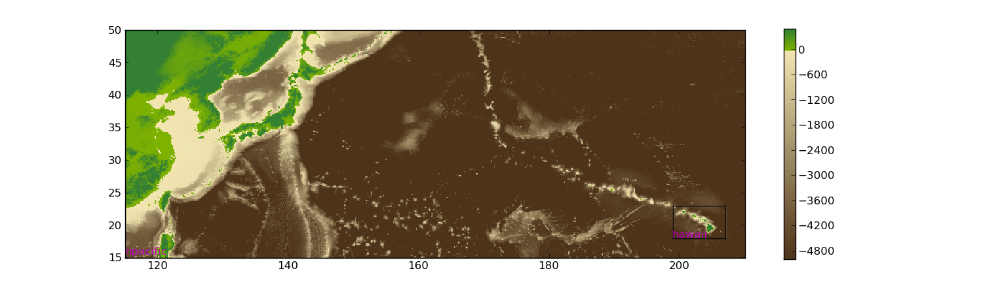
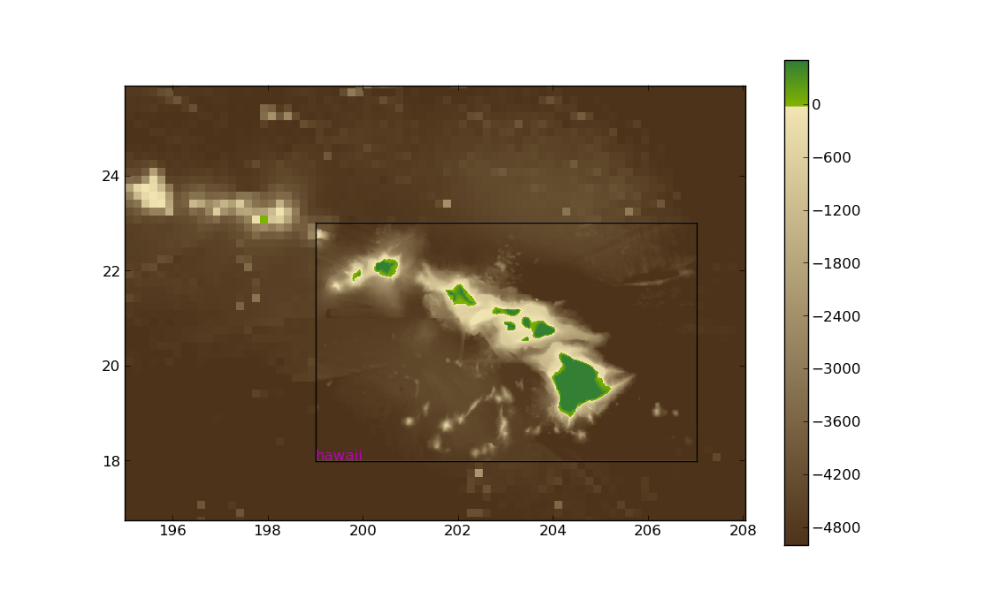

Quick start guide for tsunami modeling¶
Warning
As with all of Clawpack, this code is provided as a research and teaching tool with no guarantee of suitability for any particular purpose, and no liability on the part of the authors. See the License for more details.
This is a brief outline of how to set up and run GeoClaw to model a real event, with pointers to various useful data sources.
As always, the best way to get started is to copy a working example and modify it to do what you want. We’ll start with the example in $CLAW/geoclaw/examples/tsunami/chile2010.
Copy this directory somewhere new with an appropriate name.
As an example we will convert this to a code modeling the Great Tohoku Tsunami of 11 March 2011, and will assume an environment variable has been set so that $TOHOKU points to the directory. This is easily done by going into this directory and typing (at the Unix prompt $):
$ export TOHOKU=`pwd`
(Make sure you use back ticks not quotes. This runs the pwd command to print the current working directory and inserts the results on the right hand side of the assignment statement.)
Get bathymetry and topography¶
You need one or more files that contain both bathymetry and topography on a single rectangular grid of points (generally in lat-long coordinates). Bathymetry is underwater topography. Here (and in the code) we refer to both as topo. In general these files have negative values of z to indicate distance below sea level for bathymetry, and positive values of z to indicate height above sea level on shore. But some files have these switched. See Topography data for more details on the formats GeoClaw can handle.
You probably need two types of topo files: fairly coarse resolution over a large area of an ocean, and finer scale over one or more small regions: those where you want to model inundation and perhaps also for the source region where the tsunami was generated.
Coarse-scale topo can be obtained from various on-line databases. The easiest is the NGDC GEODAS Design-a-grid website. Simply type in the latitude and longitude of the edges of the region you need.
Choose the ETOPO 1-minute Global Relief database and then select the grid resolution you want.
Typically 4 arc-minute or even 10-minute resolution is sufficient for tsunami propagation across the ocean. Recall that 1 degree of latitude is 111 km and 1 degree of longitude is about the same at the equator, so 4 minutes is roughly 7.5 km. You can also select 1- or 2-minute data.
Finer-scale topo for much of the US coast is also available from this website; select the “US Coastal Relief Model Grids” database.
To get an idea of what region you need to get topo, it’s often easiest to use Google Earth, which shows latitude and longitude.
For the Tohoku event, we’ll use 10-minute topo over the region from 115E to 150W and from 15N to 50N, covering part of the north Pacific. Type these coordinates into Design-a-grid and choose the 10-minute grid and the ASCII Raster format. It should tell you this will create a grid with 211 latitude cells and 571 longitude cells. (Points would be more accurate than cells, since these are equally spaced grid points including the end points in each direction.)
Select ASCII Raster Format (with header).
Give your grid the name npacific and then click “Submit”.
On the next page click on “Compress and Retrieve Your Grid”. You do not need to check any of the boxes on this page.
On the next page click on “Retrieve Compressed File”.
This should save a zip file called npacific-6353.zip (the number may be different).
Move that file into your $TOHOKU directory and then unpack it:
$ cd $TOHOKU
$ mv ~/Downloads/npacific-6353.zip ./ # or from whereever it is
$ unzip npacific-6353.zip
This unzips the file to create a directory geodas_npacific-6353
Most of the files contain metadata. The actual grid is the .asc file, the one with the longest name, so move that one to this directory:
$ mv geodas_npacific-6353/npacific-6353/npacific-6353.asc ./
The first 6 lines of the .asc file are the header:
$ head -6 npacific-6353.asc
NCOLS 571
NROWS 211
XLLCENTER 115.0000000000
YLLCENTER 15.0000000000
CELLSIZE 0.166666666667
NODATA_VALUE -32768
The next 211 lines each consist of 571 values, the topo value going along one particular latitude. The first line is at northernmost latitude \(50 = 15 + 210\times 0.166666667\). The last line is at the southernmost latitude 15. On each lines the values correspond to z at points going from west to east, from longitude 115 to \(210 = 115 + 570\times 0.16666667\). Note that 210E is the same as 150W. In GeoClaw the computational domain will go from xlower = 115 to xupper = 210.
This file is almost in the form required by GeoClaw (with topotype = 3 as described at Topography data). The only problem is that GeoClaw wants the numbers to appear first on the header lines, so you can delete the words before the numbers (which aren’t needed), or move them to the end of the line for future reference. There’s a Python script available if you have Clawpack installed:
$ python
>>> from clawpack.geoclaw import topotools
>>> topotools.swapheader('npacific-6353.asc','npacific.tt3')
>>> quit()
We’ve simplified the file name too in the process, so it is now called npacific.tt3. The extension tt3 is to remind us that this file has the format required by topo_type 3.
You can now delete all the files and directory starting with npacific-6353 unless you want to inspect the metadata:
$ rm -rf npacific-6353*
You may also need to retreive other topo files for particular regions of interest. As an example, suppose we want to look at the tsunami behavior near Hawaii.
To keep the file sizes manageable we’ll just get a 1-minute data from the ETOPO1 database. To study inundation much finer bathymetry would be required.
Use design-a-grid to obtain a 1-minute grid of the area from 161W to 153W and from 18N to 23N. This gives a 481 by 301 grid.
Go through the same process as above to retrieve this grid and create a file hawaii.tt3.
There is one additional change that needs to be made in this file. The line
-1.610000000000000e+02 xlower
containing x at the lower-left corner must be incremented by 360 and changed to
1.990000000000000e+02 xlower
Since we are using coordiates from 115E to 210E we need to specify the left longitude value in eastern hemisphere coordinates rather than western.
If you want to examine the grids you have obtained, you can use the following in Python:
from clawpack.geoclaw import topotools
import matplotlib.pyplot as plt
plt.figure(figsize=(15,6)) # create figure with appropriate aspect ratio
ax = plt.axes()
npacific = topotools.Topography('npacific.tt3', topo_type=3)
npacific.plot(axes=ax, limits=(-6000,3000))
hawaii = topotools.Topography('hawaii.tt3', topo_type=3)
hawaii.plot(axes=ax, limits=(-6000,3000), add_colorbar=False, plot_box='w')
plt.axis(npacific.extent)
This should give a plot similar to
{kind=link}
Zooming in near Hawaii shows
{kind=link}
See topotools module for working with topography data for more information on the Topography class and the plot function.
Specifying topo in setrun.py¶
The file setrun.py we copied from the chilie2010 directory contains the lines:
# == settopo.data values ==
topo_data = rundata.topo_data
# for topography, append lines of the form
# [topotype, minlevel, maxlevel, t1, t2, fname]
topo_path = os.path.join(scratch_dir, 'etopo10min120W60W60S0S.asc')
topo_data.topofiles.append([2, 1, 3, 0., 1.e10, topo_path])
Note that this was pointing to a directory in scratch_dir, which is set earlier in setrun.py to $CLAW/geoclaw/scratch. This directory is set up to hold large topography files that have been downloaded. If you want to you can put the new ones you have created there, and adjust the path specified below.
We wish to change this to use the two topo files we have created. After changing the file, these lines should be
# == settopo.data values ==
topo_data = rundata.topo_data
# for topography, append lines of the form
# [topotype, minlevel, maxlevel, t1, t2, fname]
topo_data.topofiles.append([3, 1, 3, 0., 1.e10, 'npacific.tt3'])
topo_data.topofiles.append([3, 1, 3, 0., 1.e10, 'hawaii.tt3'])
We have specified two topo files. Each file has topotype 3 and we are allowing at most 3 levels of AMR in the regions covered by each file. Later we will see how to allow more levels in specific regions.
The tsunami source – seafloor motion from an earthquake¶
We also need to specify how the seafloor moves, which generates the tsunami. This is specified to GeoClaw by providing a dtopo file as described further in the section Topography data. This is a file with a similar structure to a topo file but gives the displacement of the topo over some rectangular grid, possibly at a sequence of different times.
Often earthquake data is specified in the form of a set of fault parameters that describe the slip along a fault plane of some finite size at some depth below the seafloor. A single earthquake may be described by a collection of such fault planes. All of this subsurface slip must be combined to generate the resulting seafloor motion. Ideally this would be done by solving elastic wave equations in the three-dimensional earth, taking into acount the spatially-varying elastic parameters and the irregularity of the seafloor.
In practice, the Okada model is often used to translate slip along one small fault plane into motion of the seafloor. This is essentially a Greens function solution to the problem of a point dislocation in an elastic half space, so it assumes the region of slip is small, the elastic parameters in the earth are constant, and the seafloor is flat.
For more discussion of this, see Earthquake sources: Fault slip and the Okada model and dtopotools module for moving topography for some of the available tools for applying the Okada model and creating dtopo files from given source parameters.
The chile2010 example that we are starting with has a very simple fault model for the source, consisting of a single fault plane with one set of parameters specified in the file maketopo.py in the lines
usgs_subfault = dtopotools.SubFault()
usgs_subfault.strike = 16.
usgs_subfault.length = 450.e3
usgs_subfault.width = 100.e3
usgs_subfault.depth = 35.e3
usgs_subfault.slip = 15.
usgs_subfault.rake = 104.
usgs_subfault.dip = 14.
usgs_subfault.longitude = -72.668
usgs_subfault.latitude = -35.826
usgs_subfault.coordinate_specification = "top center"
fault = dtopotools.Fault()
fault.subfaults = [usgs_subfault]
This is a 450 km by 100 km fault plane with the length oriented at 16 degrees from north (the Strike_Direction). The fault plane is not horizontal but instead dips at 14 degrees from horizontal along the axis oriented with the length. The slip along this plane has a magnitude of 15 m and the slip is in the direction 104 degrees from the strike direction (the rake). The top of the fault plane is 35 km below the surface.
The dtopo file needed for GeoClaw is specified in these lines from maketopo.py:
x = numpy.linspace(-77, -67, 100)
y = numpy.linspace(-40, -30, 100)
times = [1.]
fault.create_dtopography(x,y,times)
dtopo = fault.dtopo
dtopo_fname = os.path.join(scratch_dir, "dtopo_usgs100227.tt3")
dtopo.write(dtopo_fname, dtopo_type=3)
A 100 by 100 grid is used to evaluate the Okada model and is stored as
Currently a good source for the Tohoku event is Preliminary Model III of the UCSB group, which can be found at http://www.geol.ucsb.edu/faculty/ji/big_earthquakes/2011/03/0311_v3/Honshu.html. Scroll to the bottom of that page and click on “SUBFAULT FORMAT”.
Download this file and then... need to describe how to create `honshu_ucsb3.tt3`
Other source models for the same event can be found elsewhere, often in the same format, e.g. the USGS model at http://earthquake.usgs.gov/earthquakes/eqinthenews/2011/usc0001xgp/finite_fault.php.
Specifying dtopo in setrun.py¶
The file setrun.py we copied from the chilie2010 directory contains the lines:
# == setdtopo.data values ==
geodata.dtopofiles = []
# for moving topography, append lines of the form:
# [topotype, minlevel,maxlevel,fname]
geodata.dtopofiles.append([1,3,3,'usgs100227.tt1'])
We wish to change this to use the dtopo file we created above, so these lines should be changed to:
# == setdtopo.data values ==
geodata.dtopofiles = []
# for moving topography, append lines of the form:
# [topotype, minlevel,maxlevel,fname]
geodata.dtopofiles.append([3,3,3,'honshu-ucsb3.tt3'])
Note that we are forcing 3 levels of refinement in the region covered by the fault at the initial time. This value should be chosen to insure that the fault region has reasonable resolution. (If fewer than 3 levels of refinement are used, i.e. mxnext < 3, then this will insure that as many levels as available are used in this region.)
Note: Dynamic fault motion, in which the dtopo file contains time-dependent displacements dz, is also supported. Need to document.
Setting other parameters in setrun.py¶
Several parameters can be adjusted, see Specifying classic run-time parameters in setrun.py for a description of general Clawpack parameters and Specifying GeoClaw parameters in setrun.py for a description of additional GeoClaw parameters.
For our test problem we will change the following:
The domain size
We choose a domain that extends from the source region to Hawaii, and that is covered by the topo files:
# Lower and upper edge of computational domain:
clawdata.xlower = 140.
clawdata.xupper = 210.
clawdata.ylower = 15.
clawdata.yupper = 50.
The coarse grid
The coarse grid will have a 2-degree resolution:
# Number of grid cells:
clawdata.mx = 35
clawdata.my = 15
The output times
For a first test, let’s plot the solution every half hour for 12 hours:
clawdata.outstyle = 1
if clawdata.outstyle==1:
# Output nout frames at equally spaced times up to tfinal:
clawdata.nout = 24
clawdata.tfinal = 3600.*12
AMR parameters
We will first do a fairly coarse run to get an idea of what time interval we care about near Hawaii:
# max number of refinement levels:
mxnest = 2
# List of refinement ratios at each level (length at least mxnest-1)
clawdata.inratx = [4]
clawdata.inraty = [4]
clawdata.inratt = [4]
This causes refinement by a factor of 4 in both x and y (down to 0.5 degree) and also in time (so 4 steps will be taken on the Level 2 grids for each step on Level 1).
Regions and Gauges
For the first attempt, we will not specify any refinement regions or gauges for output, so give an empty list for each of these parameters:
# == setregions.data values ==
geodata.regions = []
# to specify regions of refinement append lines of the form
# [minlevel,maxlevel,t1,t2,x1,x2,y1,y2]
# == setgauges.data values ==
geodata.gauges = []
# for gauges append lines of the form [gaugeno, x, y, t1, t2]
Setting gauges¶
Gauges can be specified where the solution is recorded at every time step. This is specified in the setrun.py file. The file copied from the chile2010 example contains the lines
# == setgauges.data values ==
geodata.gauges = []
# for gauges append lines of the form [gaugeno, x, y, t1, t2]
geodata.gauges.append([32412, -86.392, -17.975, 0., 1.e10])
Note that geodaa.gauges is initialized to an empty list and then a list has been appended that specifies a gauge numbered 32412 at longitude -86.392 and latitude -17.975. This is the location of DART buoy 32412 off the coast of Chile. The values of t1 and t2 specified means that this gauge data will be output for all times.
This location is not in our new computational domain, so this line can be deleted. We might want to add one or more lines corresponding to the locations of DART buoys or tide gauges for the new computation. Tide gauges are generally in shallow water and we would need much finer bathymetry than we are using to resolve the flow near a tide gauge.
Let’s add a line for DART buoy 51407, which is near the island of Hawaii:
geodata.gauges.append([51407, 203.484, 19.642, 3600*7., 1.e10])
Note that gauge output is only requested after time t1 = 3600*7 seconds since the tsunami doesn’t reach this gauge until more than 7 hours after the earthquake (which could be determined by first doing a coarse grid simulation).